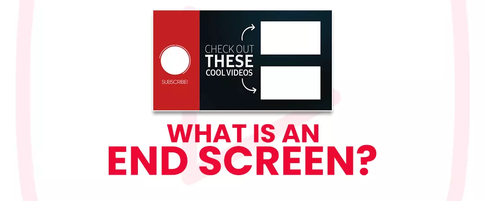
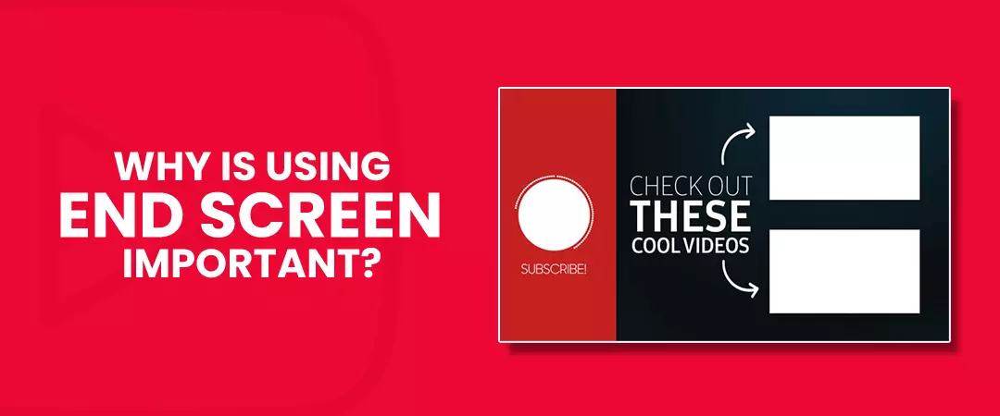
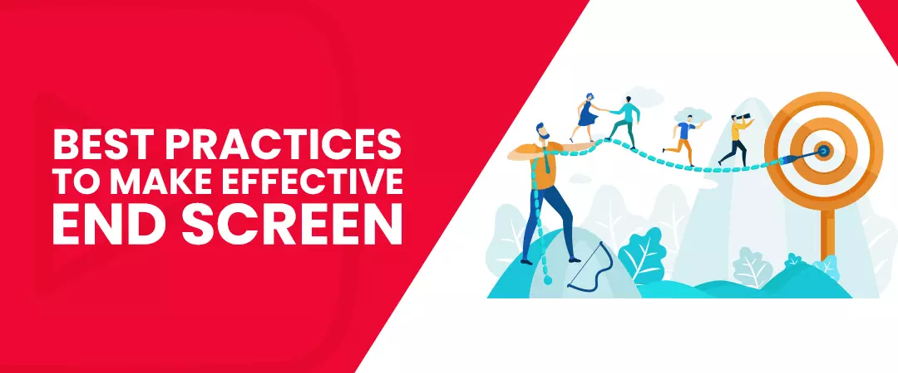
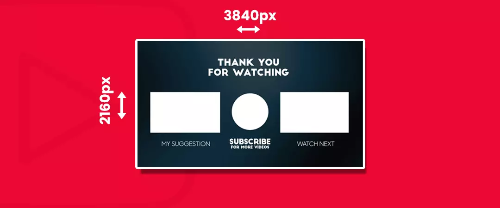
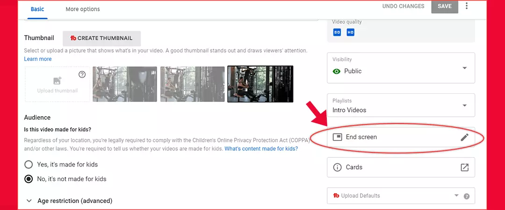
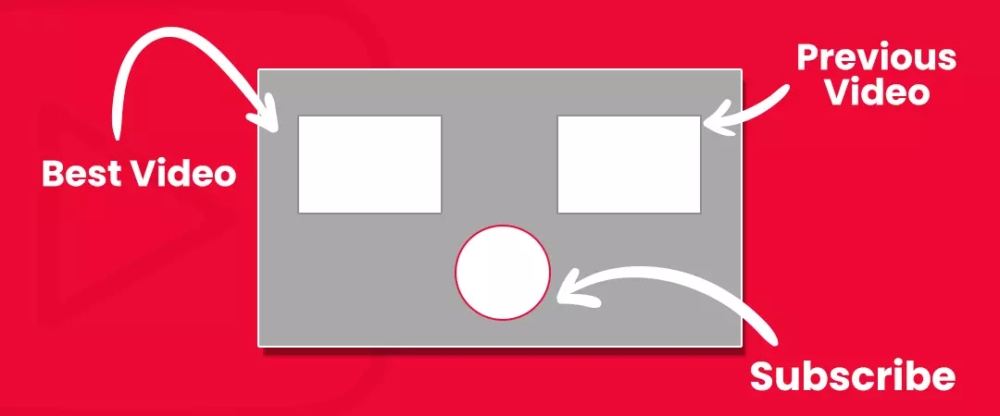
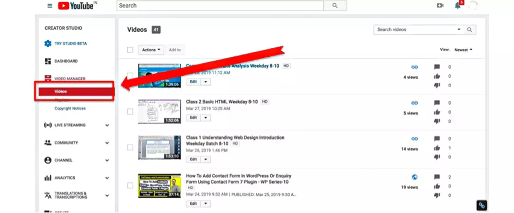
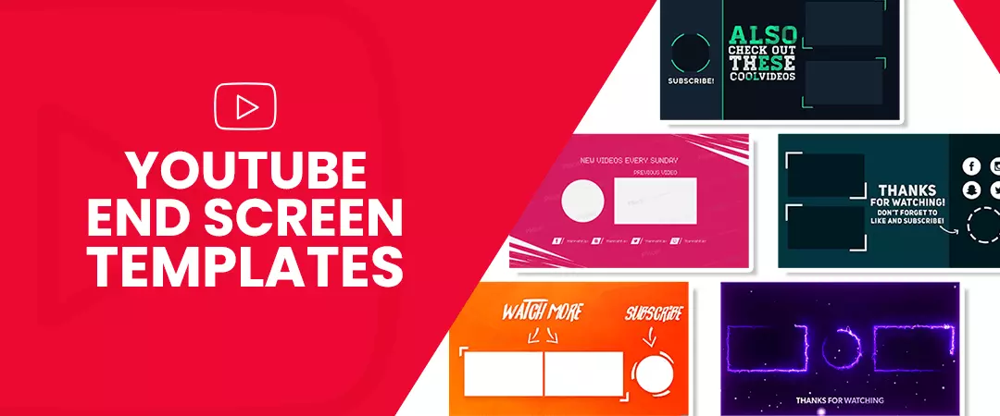
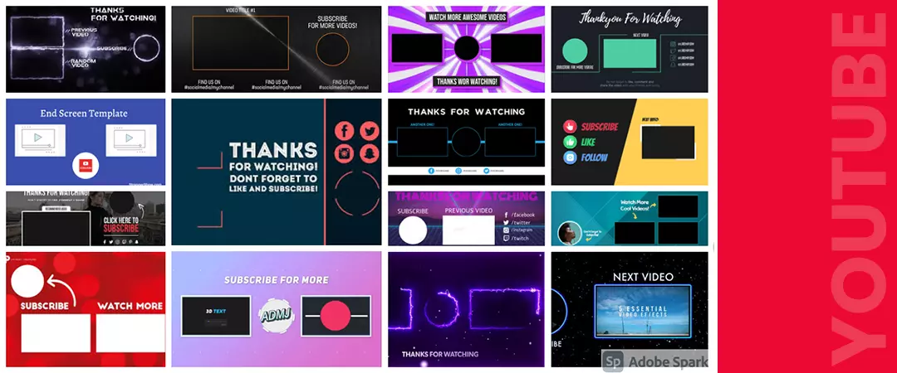

Contents
- 1. What is an End Screen?
- 2. Why Is using End Screen Important?
- 3. Best practices to make effective End screens
- 4. What is the ideal size of an End Screen?
- 5. How to add end screen in YouTube
- 6. Now choose how to shape your end screen
- 7. How to add end screen to all YouTube videos
- 8. YouTube end screen templates
- 9. Some of the best YouTube end screens templates
What is an End Screen?

Also called video outros is a useful tool, card, overlay, group of elements, kind of template, or a clickable box that can be added to the last 5-20 seconds of a video that YT offers creators to direct the target audience to take action. It can feature an amalgamation of graphics, videos, and link-based content.
You can include four types of content in your end screen on YT, essentially known as elements. Namely:
Video/playlist
You can link the video to a related or dissimilar individual video or even to a playlist of multiple videos.
Channel
You can promote a subscription via a button or link it to a different channel.
Subscribe
You can provide a link or a button to your own channel where a viewer can click to subscribe.
Merchandise/Website/crowdfunding
you can offer links to your website, affiliates, or to a crowdfunding campaign.
When a viewer hovers over an end screen, the thumbnail enlarges to represent supplementary information. “Check out this next video,” “subscribe to my channel,” “buy this product from Amazon now/from us” “Watch my friend’s channel’s videos,” “Click to donate” are some of the best clickable options with an end screen. Now, after introducing this feature to you, we want you to know are actually worthy of adding to your content.
Why Is using End Screen Important?

Help to increase views, watch-time, traffic, engagement & subscribers
This feature help you to generate multiplied views, watch-time, traffic, user involvement and following in an exponential way! you can use them to coagulate your connection with your target audience by encouraging them to interact & engage with your content in terms of likes, comments, shares & subscriptions. They can help you get more views, organic discoverability, and subscribers from every video. Therefore, they are a valuable tool for increasing YouTube watch time on your channel, prolonging engagement with the viewer, improving conversions and also, it can help you increase your viewership because they appear on both mobile and desktop devices (iOS and Android)
To get a better ranking with the YouTube algorithm
Yes, you read it right! This promotional tool is smart because YT wants users to stay on their platform for as long as possible. Because it helps it to produce more ad revenue. A video that leads a viewers to stay longer on the platform get higher ranking on YouTube in the search pages assorted by the algorithm. Remember you must target best practices to please the algorithm.
Convince the target audience to take action
When you add different links to your end screen, users get motivated to respond to the persuasive calls to action. Hence, It’s the perfect destination for a call to action. If you want to point viewers to related videos from your channel, convey them to like the video or subscribe to your channel, include a link to your website, or all of the above, a YT outro stretches you one last opportunity to engage your audience and motivate clicks & actions that can help grow your channel into a success stream!
Work as a marketing tool!
This platform is used by 55% of marketers. According to Social Media Examiner's 2020 industry report, making it the most used video channel for video marketing. An incredible & valuable advertising tool for potential creators & brands, you can create YouTube end screen using the platform’s default templates or you can formulate your own unique layouts, with your own branding, graphics, fonts, providing products for sale links, and eventually creating a professional and click-worthy outro to increase your brand’s advocacy, sales & revenue.
Direct users to a fundraising site
ou can leverage your valuable last 5-20 seconds to ask your target audience to donate towards a crowdfunding campaign driving funds for a non-profit organization or investing in your video-making essential equipment, software, or for other purposes.
Other key benefits
- Helps in the interpretation to the videos which having fewer views and great content.
- Audience retention.
- Speedily reach the YouTube monetization threshold.
Now, you know, how important these funnels are. So, why not implement the best ones today in your videos. So, let’s get started!
Best practices to make effective End screens

1. Select the perfect video
To create a YouTube end screen which is effective you must promote a video that converts a good quantity of viewers into channel subscribers. Find the video which is the potential to convert, therefore promote it to boost your channel’s growth. To find these high converting videos head to the “YouTube Watch Page” section of your subscriber report.
2. Select a related/similar video
You can feature a video that’s relevant to your target audience’s need.
3. Identify your target goal
for example, if you want to increase subscribers on your channel, make sure to include a subscribe element to your End Screen. Ask yourself, what do you want to accomplish with it? Most creators are in it for the views. Some for more watch time. And some for more subscribers, which in turn helps your channel grow. But you also have an option of linking to a verified website that is linked with your channel. You must include terms like “Subscribe” or “Subscribe to My Channel” around the subscribe element.
4. Simplicity is the king
You must not confuse users to have to think. Ultimately, you want them to act. The more videos you propose, the harder it is for them to make a decision. Bound the number of adoptions you give your target viewer. This mechanism will definitely increase your click-through rate & your watch time. Therefore, Simplicity should be the goal with your end screen. You must reduce the number of choices a user has to decrease decision exhaustion.
5. Mark your video
You can use words like “Watch Next” or “Next Related Video” about your video element. This helps the target audience to understand that the element is clickable and motivates them to watch your next creation.
6. Send traffic to your website
You can use this feature to drive more target audiences to your site. Then avoid sending viewers to your homepage. As an alternative, bid viewers something specific that they can get by visiting your site, like a discount code, report, or extra content.
7. Leverage YouTube analytics to track your progress
You can study the End screens report in the YouTube analytics to discover how effective it is. If they are not helpful in reaching your target goal you can easily add, delete or change elements or decide what to delete.
8. Promote your brand
You can use consistent branding, colours, logos, editing styles, etc. to help your target audience identify your brand and build trust. You may use the same few templates to add a feeling of consistency to your channel, which can add credibility & recognition more.
9. Use a lot of whitespaces
It is a great design tip. If the outro becomes overly jam-packed with diverse elements loaded on top of each other, it will be confusing and you won’t see any positive outcomes.
10. Choose proper CTAs
You can link to relevant videos, blog posts or to relevant products, but only if it fits. You can ask for more than one action to be taken and provide your target audience with more options, but validate that the YouTube CTAs you’re optimizing for actually is based on the video they watched up to the full length.
What is the ideal size of an End Screen?

Standard sizing remains under 1280px by 720px, and standard HD aspect ratio is 1920px by 1080px, 16:9 If you use a custom image, YT recommends using an image that's at least 300 x 300-pixel width.
How to add End screen to your YouTube videos?
How to add end screen in YouTube

To create the elements for your videos:
- Open a YT account.
- In the top right corner, select your profile picture/avatar, then YT Studio.
- From the left-hand menu, select Content.
- To add an end screen to an existing video, select the video, click the pencil icon, and skip the next step.
- But if you want to add an end screen to a new video, select the Create button on the top right of your screen to upload the new video.
- If the selected video contains annotations, track the instructions to unpublish them.
- Now, select the Video elements tab.
- You can add up to four elements, and one of them must be a video or playlist.
Now choose how to shape your end screen:

Add element:
You can add up to four elements to a video. Just choose each element and enter the obligatory information, then head ahead and click Create element.
Copy from the video:
You can also copy it from an alternative one of your videos and create the elements.
YouTube template:
You can choose from automated formats that represent amalgamations of elements.
Add a custom one
You can add your own designed version. You can regulate the size and settlement of each element on the end screen and the length of time each will be displayed.
Now, preview the end screen by selecting Preview on the top left corner and select Save to confirm. Bravo! You just added a screen to your videos!
How to add end screen to all YouTube videos

To Add End Screen to all your videos you can use, Canva, Snappa or TubeBuddy tool’s bulk update option.
- Step 1: Go to videos & follow the above steps to add the end screen element on your video, then move on to your Videos page and then click the edit button of the video which has the end screen element.
- Step 2: Click the “Editor” tab in the left side menu. After you reach the editor page, check the end screen templates are attached or not.
- Step 3: Now click the TubeBuddy dropdown box. And, check the “End Screen, APPLY_TEMPLATE” checkbox, and enter the template name.
- Step 4: Now, from the editor page and head to the videos page again. Now, select the copy option of “Bulk End Screen Actions”.
- Step 5: Select a template name, which you have added before and then click the “Continue” button. On the next page select elements.
- Step 6: Now, choose the videos you want to the add the end screen. TubeBuddy represents various options to select the video. You can choose 30 videos or specific playlists. Next, filter the videos from the earlier selected lists. If you want to select all, then choose the “All” option.
- Step 7: Now, confirm the dialogue to progress the bulk operation. Voila! You just added an end screen promotion to all of your videos!
YouTube end screen templates

You can create a high-quality end screen that meets your target goals. Here are some:
1. Adobe Spark
It has various templates to customize to meet your individual branding needs. Moreover, it is very simple and easy to use.
2. Canva
You can make a custom-made end screen with an automated template using Canva. This template helps you to add illustrations, icons, stickers, and even animated effects.
3. Snappa
It provides free Youtube end screen and customizable templates that have been professionally premeditated. Just select a template, sign up/create an account, and you can make a perfect end screen.
Some of the best YouTube end screens templates

- 1. YouTube End Screens by templatesbravo
- 2. YouTube Kit by Media_Stock
- 3. Youtuber Subscribe Pack by Gioraphics
- 4. YouTube Subscribe by templatesbravo
- 5. YouTube Kit by NinjaTeam.
I hope you found this guide helpful on, what are YouTube End screens and how to make them effective.
Feel free to share!